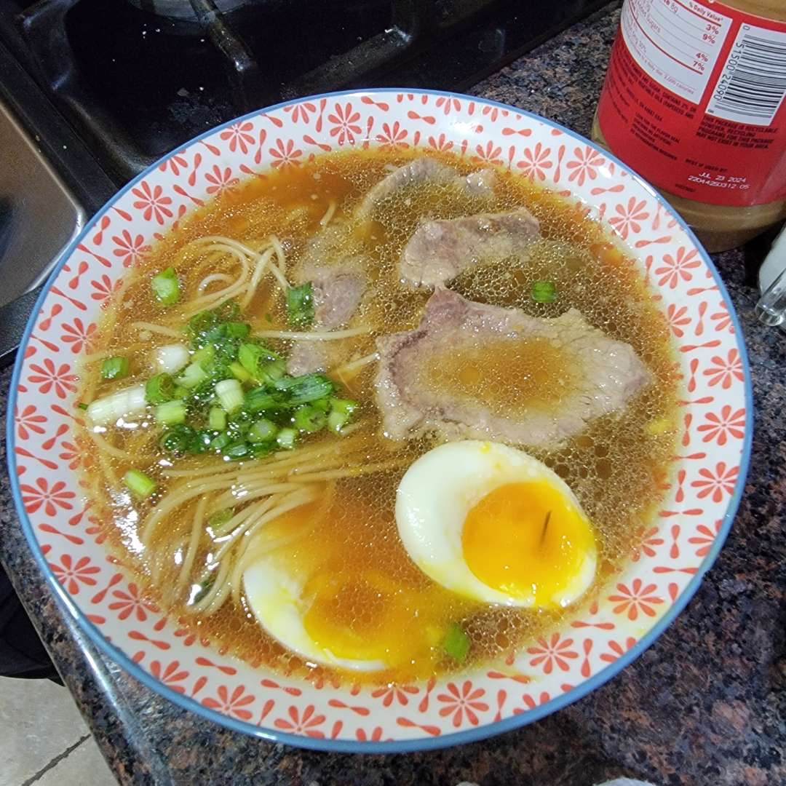

Ramen Recipe

I came across this ramen recipe while scrolling through youtube for a cooking competition my friends were having. Everyone liked this the best, and now, whoever may be reading this, I hope you can enjoy it for yourself too :)
Ingredients:
- 6 lb. of Pork Neckbone
- 2 lb. of Pork Shoulder or Pork Belly
- 1 Large Leek
- 2 Ginger Roots
- 1 Piece of Dried Kelp or Kombu
- 2 Bulbs of Garlic
- 1 & 1/2 tbsp. Chicken Powder
- 3/4 cup Sake
- 3/4 cup of mirin
- 1 & 1/2 cup of soy sauce
- 6 Eggs
- Ramen Noodles
- Green Onions
Directions:
- Soak the pork bones in cold water for 30 minutes to an hour
- Discard the water, bring a new pot of water to a boil, and blanche the pork bones for 5-7 minutes
- Drain and discard the water
- Thoroughly wash each neck bone, and place into yet another pot of boiling water
- Add each fragrance vegetable
- Sliced Ginger
- Leek chopped in half
- 2 bulbs of garlic cut in half
- Dried konbu or kelp. Be sure to remove any excess white powder
- 1 & 1/2 cup of soy sauce
- Skim off excess material that accumulates at the top. Be sure not to stir the soup as the scum could sink to the bottom
- Afterwards, cover the pot, reduce to low heat, and simmer the broth for 3 hours
- Now, place your pork shoulder or belly into the pot, and simmer for 30-45 minutes
- In a separate pot:
- Leftover Ginger
- 3/4 cup of sake
- 3/4 cup of mirin
- 1 & 1/2 cup of soy sauce
- Bring the tare to a boil over high heat for 5-7 minutes
- Once both the pork meat and tare are ready, spread the tare sparingly over the meat
- Afterwards, cool the pork in a refrigerator
- Drain out the ramen broth into a bowl, and do witht eh vegetables as you please. You can save them to make more broth, or just toss them.
- Take out the pork once it's cooled, and cut for service. Spread a little more tare, just for color
- Now is also a good time to cut those green onions
- Bring a pot of water to boil
- Prepare the ramen noodles accord to their packaging
- Prepare the eggs how you'd like them during this time as well
- Now for service. In each serving, add:
- 1/4-1/3 cup of tare
- 1-2 cups of broth
- Noodles
- Cut Pork meat
- Eggs
- Garnish!
- Enjoy!
Home